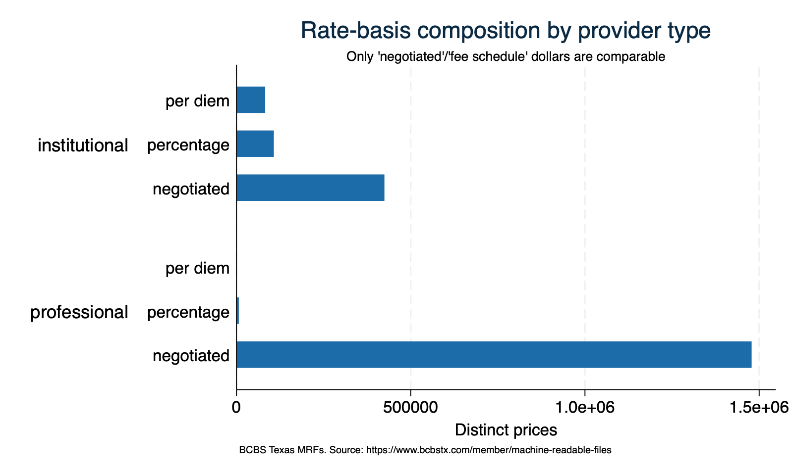

Coverage, data-quality, and descriptive profiling. Built to run on one snapshot now and on a stacked multi-month panel later (keyed on run_date).
. di as txt "Monthly snapshots (run_date) in this file : `nsnap' (`snaps')" Monthly snapshots (run_date) in this file : 1 (2026-05-30) . di as txt "Distinct medical price rows : `=_N'" Distinct medical price rows : 2097564
. di as txt "Networks : `: word count `nn''"
Networks : 11
. di as txt "Procedure codes present : `: word count `pc''" Procedure codes present : 93 . di as txt "NOTE run_date is the snapshot key; file_vintage is the source file's" NOTE run_date is the snapshot key; file_vintage is the source file's . di as txt " production date (provenance only — it varies within one pull)." production date (provenance only — it varies within one pull).
Which of the policy team's 93 menu codes showed up this run. Missing codes are listed explicitly — they are NOT analyzable until a future run includes them.
. count if _merge==3 93 . di as txt "Menu codes FOUND in data : `r(N)'" Menu codes FOUND in data : 93 . count if _merge==2 0 . di as err "Menu codes NOT found : `r(N)' (cannot be analyzed this run)" Menu codes NOT found : 0 (cannot be analyzed this run) . list procedure_code short_label if _merge==2, noobs sep(0) abbreviate(28)
The payer-MRF analogue of Texas 2036's hospital-file methodology audit. Only fee-for-service, dollar-denominated rates are comparable as unit prices; percentage-of-charge and per-diem are kept but flagged out of dollar comparisons.
. tabulate rate_basis provider_type, row +----------------+ | Key | |----------------| | frequency | | row percentage | +----------------+ How to | read | amount | (negotiate | d$, fee | schedule, | Professional percentage | (clinician) / , per | institutional diem, | (facility) / both derived) | institu.. profess.. | Total -----------+----------------------+---------- negotiated | 424,155 1,478,055 | 1,902,210 | 22.30 77.70 | 100.00 -----------+----------------------+---------- per diem | 82,269 0 | 82,269 | 100.00 0.00 | 100.00 -----------+----------------------+---------- percentage | 106,850 6,235 | 113,085 | 94.49 5.51 | 100.00 -----------+----------------------+---------- Total | 613,274 1,484,290 | 2,097,564 | 29.24 70.76 | 100.00 . di as txt _n "Comparable dollar prices flag (dollar_ffs): 1 = ffs + negotiated/fee-schedule \$" Comparable dollar prices flag (dollar_ffs): 1 = ffs + negotiated/fee-schedule $ . tab dollar_ffs Comparable | unit price | (ffs + | dollar | basis) — | filter for | $ analysis | Freq. Percent Cum. ------------+----------------------------------- 0 No | 195,354 9.31 9.31 1 Yes | 1,902,210 90.69 100.00 ------------+----------------------------------- Total | 2,097,564 100.00

. tabulate provider_type care_setting Professional | (clinician) / | Care setting institutional | (inpatient / (facility) / | outpatient / both) both | inpatient outpati.. | Total --------------+----------------------+---------- institutional | 283,321 329,953 | 613,274 professional | 0 1,484,290 | 1,484,290 --------------+----------------------+---------- Total | 283,321 1,814,243 | 2,097,564
IMPORTANT data limitation. In the BCBSTX professional file one negotiated price applies to a SET of place-of-service codes (e.g., "11;17;20;50;72;81"), not one POS. So an office (POS 11) vs hospital-outpatient (POS 22) "site-neutral" comparison is NOT separable within this payer's professional rates. The feasible site-of-care lens is PROFESSIONAL (physician) vs INSTITUTIONAL (facility) — done in 600.
. count if provider_type=="professional" & strpos(place_of_service,";")>0 1,484,290 . di as txt "Professional rows whose price spans MULTIPLE POS codes: `r(N)'" Professional rows whose price spans MULTIPLE POS codes: 1484290
. count if provider_type=="professional" & pos_has11 & pos_has22 380,056 . di as txt "Professional prices covering BOTH office (POS 11) and HOPD (POS 22) in one row: `r(N)'" Professional prices covering BOTH office (POS 11) and HOPD (POS 22) in one row: 380056 . di as txt " -> confirms one rate, many settings (POS is not a price lever in this file)." -> confirms one rate, many settings (POS is not a price lever in this file).
. di as txt "Comparable dollar prices: `=_N'" Comparable dollar prices: 1902210 . summarize negotiated_amount, detail Negotiated price (US$; a percent when rate_basis=percentage) ------------------------------------------------------------- Percentiles Smallest 1% 0 0 5% 0 0 10% 5 0 Obs 1,902,210 25% 40.85 0 Sum of wgt. 1,902,210 50% 104.03 Mean 714.5966 Largest Std. dev. 3345.016 75% 303.86 271524.4 90% 1108.24 271524.4 Variance 1.12e+07 95% 2180.96 271524.4 Skewness 15.37108 99% 13945.08 271524.4 Kurtosis 478.5721 . count if negotiated_amount<=0 173,940 . di as err " prices <= \$0 (suspect / placeholder): `r(N)'" prices <= $0 (suspect / placeholder): 173940 . count if negotiated_amount>200000 9 . di as txt " prices > \$200,000 (verify; plausible for some inpatient DRGs): `r(N)'" prices > $200,000 (verify; plausible for some inpatient DRGs): 9
Median, p10, p90 of the comparable dollar price by service category and provider type — the category-level orientation before the service-level deep dives in 600.
. di as txt "Median, p10, p90 of the comparable dollar price, by service category and provider type:" Median, p10, p90 of the comparable dollar price, by service category and provider type: . list service_category provider_type median p10 p90 n, noobs sep(0) abbreviate(24) +-------------------------------------------------------------------------+ | service_category provider_type median p10 p90 n | |-------------------------------------------------------------------------| | Cardiology institutional 75 11 419 6985 | | Cardiology professional 67 12 241 39462 | | E&M outpatient institutional 106 26 405 25310 | | E&M outpatient professional 82 35 164 304161 | | Emergency institutional 384 105 2,580 17632 | | Emergency professional 65 10 155 81226 | | Imaging institutional 256 69 1,146 35027 | | Imaging professional 85 27 270 260218 | | Inpatient DRG institutional 0 0 9,750 137422 | | Inpatient surgery institutional 6,219 1,628 22,572 33428 | | Inpatient surgery professional 1,058 430 2,036 97848 | | Lab institutional 13 4 60 38729 | | Lab professional 6 4 29 70246 | | Maternity institutional 971 93 5,077 23687 | | Maternity professional 354 37 1,926 182952 | | Maternity DRG institutional 0 0 6,174 41044 | | Outpatient procedure institutional 805 0 2,899 50626 | | Outpatient procedure professional 215 44 567 264265 | | Preventive institutional 488 134 1,558 14265 | | Preventive professional 108 69 276 177677 | +-------------------------------------------------------------------------+
The static tables above answer fixed questions; this widget lets you ask your own. Built with the team's sparkta, it charts the median comparable price by care setting (inpatient vs outpatient) — a dimension the tables do not split — and re-draws live as you filter by code system (CPT / HCPCS / MS-DRG), provider type, and service category. Why run it: a fast way to PROFILE whether the data behaves sensibly across structural dimensions we filter on but rarely chart — inpatient prices should dwarf outpatient, and MS-DRG (whole-stay) prices should dwarf CPT line items — so an analyst can sanity-check the extract and spot a slice worth a closer look. The collapsible stats panel (N, median, spread) updates with every filter. (Representative ~40k-row sample of the comparable prices so the page stays light; the full data is in 02_cleaned/.)
These activate automatically once >=2 monthly pulls are stacked (append future runs, then re-run). With a single snapshot they are intentionally skipped.
Each price is tagged with the Texas Public Health Region of its provider group (the modal region of the group Texas NPIs — see 600 section 6). A blank region means the provider is registered out of state, the ZIP did not map, or the group is TIN-only with no resolvable NPI.
. tab has_region has_region | Freq. Percent Cum. ------------+----------------------------------- 0 | 15,186 0.72 0.72 1 | 2,082,378 99.28 100.00 ------------+----------------------------------- Total | 2,097,564 100.00 . tab region if region!="" region | Freq. Percent Cum. ------------+----------------------------------- 1 | 179,063 8.60 8.60 11 | 142,595 6.85 15.45 2/3 | 500,879 24.05 39.50 4/5N | 255,055 12.25 51.75 6/5S | 290,795 13.96 65.71 7 | 293,113 14.08 79.79 8 | 253,967 12.20 91.98 9/10 | 166,911 8.02 100.00 ------------+----------------------------------- Total | 2,082,378 100.00
Two former gaps are now CLOSED in this run — percent of Medicare (600, section 5) and Public Health Region geography (600, section 6). The following remain not possible with the current data: